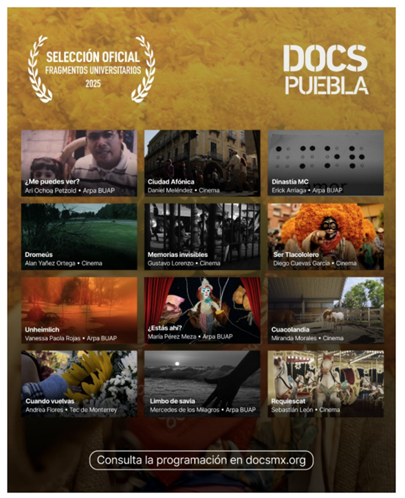

Estados Unidos
Corredor México–Estados Unidos: el más numeroso del mundo (OIM/ONU).
Capítulo: El Hub
Iniciativa de la Escuela de Humanidades y Educación del Tec de Monterrey, campus Puebla: un espacio de encuentro para proyectos académicos de impacto social sobre movilidad humana.
Desde su inauguración en febrero de 2025, colabora con la OIM y Samuel Kishi, embajador de buena voluntad de la Organización.
Cuatro pilares estratégicos — Comunicación, ética, investigación docente y sentido humano.
Este sitio recorre el Hub en capítulos: quiénes somos, datos OIM, historias, investigación en Puebla y una invitación a participar.
OIM
Para dimensionar el fenómeno, estas cifras sitúan la migración mexicana en un contexto global antes de escuchar voces y narrativas.
Estimaciones del Instituto de los Mexicanos en el Exterior (SRE). El corredor México–Estados Unidos es considerado el más numeroso del mundo, de acuerdo con datos de la OIM y la ONU (UN DESA, 2024).
Mexicanas y mexicanos registrados en el exterior
—
Suma estimada por región · IME/SRE
Estados Unidos
Corredor México–Estados Unidos: el más numeroso del mundo (OIM/ONU).
Europa
Registro de connacionales en Europa (IME/SRE).
Asia
Mexicanas y mexicanos residentes en Asia (IME/SRE).
Estas cifras sitúan la migración mexicana en un contexto planetario: la gran mayoría de quienes viven fuera del país lo hace al norte; Europa y Asia representan comunidades más pequeñas pero crecientes, visibles en la diversidad de la ciudadanía global.
Ampliamos la mirada: la migración es un fenómeno planetario. Este mapa permite comparar flujos y stocks a escala global.
Mapa interactivo del Portal de Datos sobre Migración (GMDAC / OIM), con indicadores de stocks migratorios internacionales comparables a nivel global y regional.
Fuente: Portal de Datos sobre Migración (OIM) · Informe sobre las Migraciones en el Mundo 2024.
Conceptos precisos ayudan a leer datos, noticias y políticas migratorias con rigor. Estos materiales apoyan el trabajo docente y la divulgación del Hub.
La Organización Internacional para las Migraciones mantiene un glosario en línea con definiciones acordadas internacionalmente sobre migración, asilo, trata de personas y términos afines — útil para alinear el lenguaje en aulas, medios y política pública.
Consultar el glosario en línea de la OIMHistorias
La migración no se entiende solo con cifras. Sociedad Migrante acerca testimonios, debates y miradas desde distintos países para situar el fenómeno con rostro y voz humana.
Es muy importante dar a conocer avances y proyectos académicos, así como escuchar las voces que nos representan como ciudadanía a nivel mundial.
Sociedad Migrante aborda la migración desde una perspectiva humana y global, con la participación de estudiantes e invitadxs especiales. La primera temporada incluye entrevistas a eurodiputadxs desde el Parlamento Europeo en Bruselas, Bélgica.
Escuchar «Sociedad Migrante» en SpotifyEpisodio 1 — Javier Moreno Sánchez (Parlamento Europeo)
Proyectos de narrativas
La investigación y la divulgación se materializan en obras y análisis. Estos proyectos muestran cómo el Hub transforma datos y voces en narrativas con impacto social.

Muestra museográfica
Pieza integrada a una exposición museográfica presentada en el Centro Cultural San Roque, en la ciudad de Puebla. Elaborada con estudiantes de Comunicación, en diálogo con la obra de Jorge Carlos Álvarez.

Cine · Docs Puebla 2025
Cortometraje exhibido en México y el extranjero; selección oficial Fragmentos Universitarios en Docs Puebla.
Aprendizajes
Conceptos precisos ayudan a leer datos, noticias y políticas migratorias con rigor. Estos materiales apoyan el trabajo docente y la divulgación del Hub.
La Organización Internacional para las Migraciones mantiene un glosario en línea con definiciones acordadas internacionalmente sobre migración, asilo, trata de personas y términos afines — útil para alinear el lenguaje en aulas, medios y política pública.
Consultar el glosario en línea de la OIMInvestigación
Desde el campus Puebla, el Hub convierte la pregunta global en evidencia local: encuestas, grafos y cartografías que describen la movilidad estudiantil.
Una aproximación a la movilidad estudiantil en el Tec de Monterrey.
Recientemente se realizó una investigación coordinada por el Dr. Barradas-Gurruchaga en la que participaron la Mtra. Villa Maciel y la Dra. Castaño Echeverri. Se generaron datos que permiten acercarse al fenómeno de la migración estudiantil, a través de encuestas aplicadas a una muestra del estudiantado.
Grafo interactivo de factores
Explora nodos y relaciones · Graph Commons
Fuente: Elaboración propia.
En esta visualización se aprecian algunos de los factores más relevantes que impulsan la movilización de personas jóvenes (estudiantes) en su llegada a la ciudad de Puebla.
Movilidad estudiantil
Los mismos datos cobran forma en un dendograma: estados, ciudades de origen y motivos de llegada a Puebla, listos para explorar.
Esta visualización muestra un dendograma lineal con los estados de procedencia de las y los estudiantes foráneos que respondieron a la encuesta, sus ciudades de origen y las razones de su movilización con destino a la ciudad de Puebla. Con estos datos se cuenta con información valiosa para la institución y para la ciudad.
Pasa el cursor o toca un nodo para resaltar sus conexiones. Haz clic para fijar la selección.
Factores asociados a permanecer en Puebla
Pasa el cursor o toca una barra para ver el detalle.
Selecciona un factor para explorar los resultados de la encuesta.
Agrupación temática derivada de respuestas abiertas de estudiantes que indicaron que permanecerían en Puebla, presentada a nivel nacional.

Tu lugar en la historia
Has recorrido voces, datos, investigación y proyectos con impacto. Ahora puedes formar parte de esta red: proponer una idea, difundir o colaborar desde tu disciplina.
Los proyectos del Hub — desde piezas visuales y cortometrajes hasta estudios de datos y conferencias internacionales — nacieron de colaboraciones abiertas. El siguiente puede llevar tu firma.
¡Súmate a los esfuerzos del Hub de Migración e Impacto Social! Desde el Hub se trabaja en pro del ODS 10 — Reducción de la desigualdad — con proyectos académicos de inmersión e impacto social.
Contáctanos. Escribe con una propuesta de proyecto académico que impacte en nuestra sociedad y, en particular, en el subgrupo de personas en movimiento. ¡Te esperamos!
Tu voz en el mapa
La migración también se cuenta desde dónde estás. Tus tres respuestas se reflejan en el mapa; si quieres, añade una frase breve que otros podrán leer al hacer clic en tu ubicación.
Cargando ubicaciones compartidas…
Ayuda
Respuestas breves a las dudas más comunes sobre el Hub, sus datos y cómo participar.
Es una iniciativa académica del Tecnológico de Monterrey, campus Puebla, inaugurada en febrero de 2025 para estudiar la migración con enfoque humano, ético y de impacto social. Articula investigación, divulgación (como el podcast Sociedad Migrante), visualización de datos y proyectos con la OIM y la GMMA.
Puedes proponer un proyecto académico, colaborar en investigación sobre movilidad estudiantil, difundir los contenidos del sitio o sumar tu voz en el mapa de ubicaciones. Escríbenos desde la sección de contacto.
Las cifras globales provienen del Instituto de los Mexicanos en el Exterior (SRE) y del Portal de Datos sobre Migración de la OIM. La investigación sobre movilidad estudiantil en Puebla es elaboración propia del equipo del Hub (encuestas, Graph Commons y cartografía). El mapa de visitantes puede usar una hoja de Google (ver apps-script/SETUP-MAPA.md), el archivo datos-visitantes.json y las respuestas de tu navegador; las frases opcionales («voces») se leen al hacer clic en el mapa.